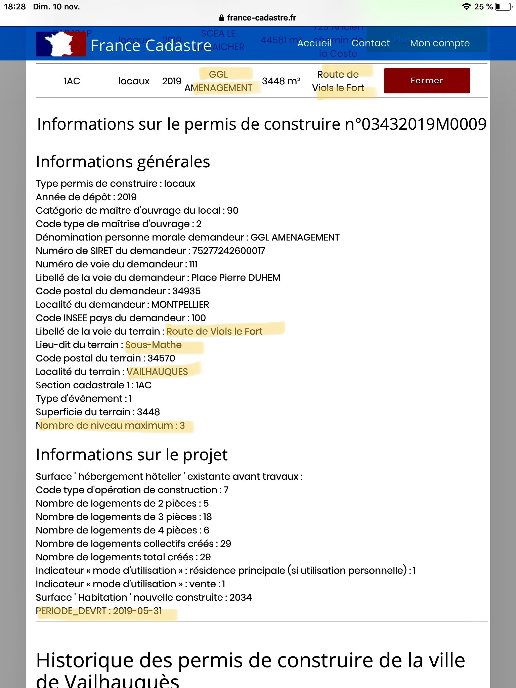

Vailhauques watchdog
C'est quoi un watchdog?

Definition du watchdog:
xxxxxxxxxxCette collocation fait référence à l'attitude de vigilance permanente et de recherche des faits réels. Elle s'inscrit dans une échelle de valeurs où la vérité est l'affaire de tous, et ne saurait être l'apanage d'un groupe, d'une faction, ou, pire encore, d'un seul homme.
Cliquer ici pour plus d'informations sur un watchdog
Commentaires
Si vous avez des commentaires, contactez nous à l'adresse: watchdog.vailhauques@gmail.com
Le site sera mis à jour régulièrement au fur et à mesure que les informations nous parviennent (plan de construction, projet détaillé, plus de décryptage).
Vailhauques watchdogC'est quoi un watchdog?CommentairesProjet de modification du PLUDecryptage 1: Augmentation du nombre de logements [19/11/2019]Decryptage 2: Densification [19/11/2019]Decryptage 3: Bassin de retention d'eau [23/11/2019]Decryptage 4: Plans et changements pour le quartier 'Claux' [23/11/2019]
Projet de modification du PLU
Une enquête publique concernant la modification de PLU est ouverte du 18 novembre au 18 décembre 2019. Donnez votre avis en mairie. La commissaire enquêtrice sera sur place le lundi 2 décembre de 14h à 17h, et le mercredi 18 décembre de 14h à 17h.
La Mairie de Vailhauquès a mis à disposition 20 documents expliquant les modifications proposées du Plan Local d'urbanisme (PLU). Si vous voulez les consulter, ils se trouvent ici.
Si vous n'avez pas le temps de lire les 20 documents, voici notre décryptage.
Decryptage 1: Augmentation du nombre de logements [19/11/2019]
xxxxxxxxxxUn premier point abordé par la proposition de modification du PLU concerne l'augmentation du nombre des logements. **Les documents proposent une augmentation de 500 logements** (Reference: http://www.ville-vailhauques.fr). Decryptage:
Il y a confusion entre logements et habitants:
Nous savons qu'en moyenne, chaque foyer sur Vailhauquès compte 2.7 habitants (Reference: http://www.ville-data.com). La modification du PLU propose donc une augmentation de 1350 habitants.
La population actuelle de Vailhauquès est de 2710 habitants (Reference: http://www.ville-data.com). L'arrivée de 1350 habitants amènerait la population à 4074 habitants en 2030 (Figure 1). Ceci représenterait une augmentation de 50% de la population par rapport a 2020.
En revanche, si Vailhauquès suit le taux d'augmentation de la population moyenne de l'Herault (1.6/an, Reference: http://www.ville-data.com), nous arriverons a 3167 habitants en 2030 (Figure 1). La modification de PLU propose un taux moyen d'augmentation de la population plus similaire à celui de Montarnaud que celui de l'Hérault.
Ces résultats sont synthétisés dans la Figure 1.

Figure 1. Pourcentage d'augmentation de la population de Vailhauquès depuis 1999. Reference: http://www.ville-data.com.
xxxxxxxxxxLe document I-PADD.pdf dans http://www.ville-vailhauques.fr nous explique que le taux d'augmentation de la population est de 1.8% par an. Avec un taux d'augmentation de la population de 1.8% par an, et une population de 2700 habitants, nous nous attendons à une augmentation de ~400 habitants d'ici 10 ans.
Comme il y a ~2.7 habitants par foyer, une augmentation de 400 habitants représenterait: 400 / 2.7 = 148 logements. Ce chiffre est très différent des 500 logements proposés par la modification du PLU.
Une création de 500 nouveaux logements induit un vrai taux d'augmentation de la population de 4.7%/an, similaire à celui de Montarnaud (4.3%/an, voir Figure 2), et loin du taux moyen de la region (1.6%/an).

Figure 2. Pourcentage annuel d'augmentation de la population de Vailhauquès depuis 2010. Reference: http://www.ville-data.com
Decryptage 2: Densification [19/11/2019]
Le projet de modification du PLU propose une densification importante de la commune de Vailhauquès.
La densification de la population est recommandée par le code de l’urbanisme. Habituellement la population dense est associée à la ville, et c’est en très grande partie pour échapper à cela que les personnes se tournent vers la campagne et les villages. Cette densification recommandée est à l’exact opposé de ce que les gens recherchent dans les villages.
Parmi les projets futurs de construction à Vailhauquès, notons le projet porté par 'GGL Amenagement' de construire 33 maisons, un parking, et 1 bâtiment collectif R+2 de 29 logements dans le quartier de l'Eglise. Le permis de construction a été déposé par GGL le 31 Mai 2019 (voir Figure 4 ci-dessous).
Le choix a été fait d’implanter des quartiers denses dans les dents creuses du village, et lever les options de construction sur des terrains en direction de Montarnaud, ne comportant aucun élément naturel ou de patrimoine à préserver, contairement au quartier de l’église, avec ses pâturages historiques en arrière-plan. Ces nouvelles constructions dans les dents creuses au milieu d’anciens quartiers résidentiels risquent d'avoir un impact sur le cadre de vie des villageois établis depuis des décennies, de compliquer la circulation (étranglement entre deux bâtiments au niveau de la mairie), et sont situés dans des zones d’aléas de mouvements de terrains (argile). Au rythme de croissance du village, et de la région en général, protéger ces espaces c’est garantir un maintient d’espaces verts pour les générations futures.

Figure 3. (haut) Le quartier de l'Eglise ce dimache 17 Novembre 2019. (bas) Photo montage du projet potentiel.

Figure 4. Permis de construction pour un R+2 depose par GGL dans le site: http://france-cadastre.fr
Decryptage 3: Bassin de retention d'eau [23/11/2019]
Nous avons reussi aussi a apprendre que le bâtiment sur la fourche aura un taux de 80% d’occupation du terrain, et un seul bassin de retention pour ce bâtiment et les 33 maisons du claux (normalement il faut un bassin par projet). L’imperméabilisation du sol sera énorme; sachant que ce bâtiment sera en contrebas de la colline où il y aura 33 maisons et que la route est remplie d’eau et de matériaux de ravinement en cas de pluie, cela ne présage rien de bon pour les abords du feu rouge actuel.
Decryptage 4: Plans et changements pour le quartier 'Claux' [23/11/2019]
Vous pouvez trouver le document de modifications de PLU fournis par la commissaire enquêtrice ici.
Sur ce document sont surlignes les passages concernant le quartiers 'claux' (église) et la 'sous mathe'. On ramarque:
- augmentation de la hauteur des maisons de plein pied,
- empiètement plus grand vers la colline,
- suppression d’espaces verts,
- passage de 20% à 80 % d’occupation des sols,
- déviation de la départementale et
- mention explicite a deux reprises de modifications pour accommoder la réalisation du projet.